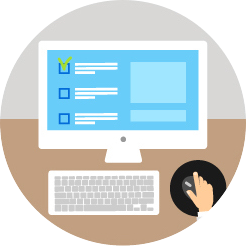

Démarrez votre demande maintenant
Service en version bêta disponible uniquement pour les demandes concernant le département 75 Paris.
Une autorisation provisoire de travail, comment ça se passe ?
-

1 Démarrez votre demande sur notre site
-

2 Remplissez votre demande sur "Démarche simplifiée"
-

3 Recevez votre autorisation par e-mail
Les avantages de Work in France
- Votre démarche est entièrement dématérialisée.
- Plus besoin de se déplacer ou d'envoyer des courriers.
- Votre démarche est sécurisée et rapide.
- Vous recevez des notifications par e-mail sur l'avancée de votre demande d'autorisation.
- C'est gratuit !